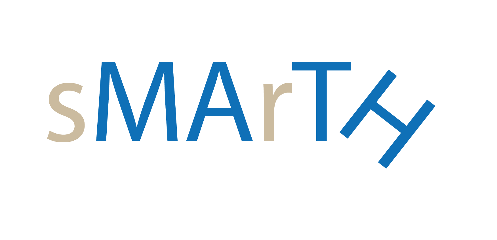
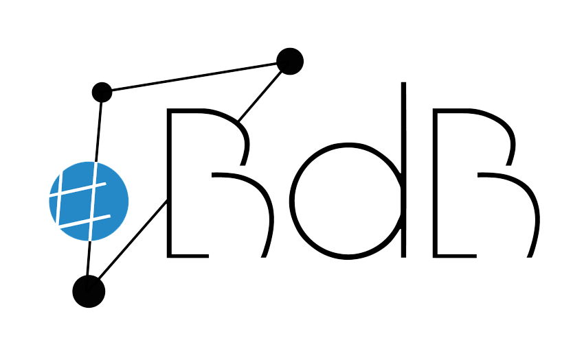

JavaScript ist deaktiviert.
Diese Übungsseite benötigt JavaScript. Bitte aktiviere es im Browser und lade die Seite neu.


Startseite
Fragen & Antworten
Werkzeuge
M10 Taschenrechner
Prüfungssimulation
Klassenübersicht (Lehrkräfte)
Trainer
Kopfrechnen
Bin. Formeln
Bruchgleichungen
Halbwertszeit
Kugel
Lineare Funktionen
Potenzen
Quadratische Funktionen
Strahlensätze & Streckung
Trigonometrie
Wachstum & Zerfall
Wahrscheinlichkeit
Impressum
Datenschutz
Diese Seite konnte nicht vollständig geladen werden.
Bitte versuche es mit einem aktuellen Browser (Chrome, Firefox, Safari, Edge) und prüfe deine Internetverbindung.